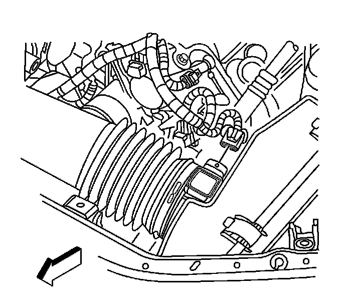
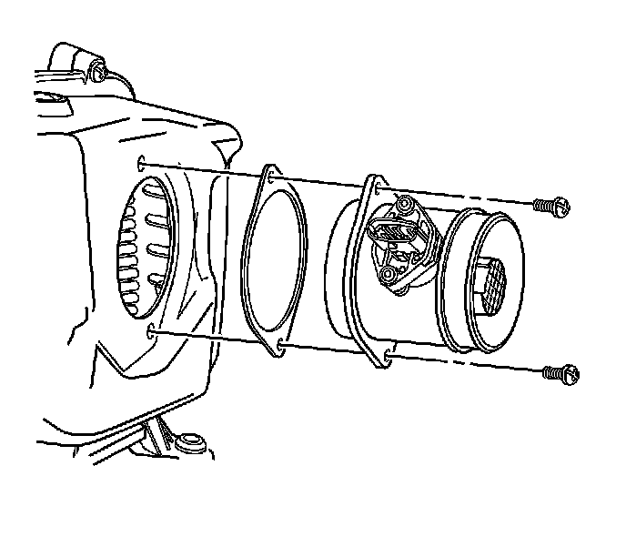

Air Flow Meter/Sensor: Service and Repair
Mass Airflow Sensor/Intake Air Temperature Sensor Replacement
Removal Procedure

1. Disconnect the mass air flow (MAF)/intake air temperature (IAT) sensor electrical connector.

2. Remove the air cleaner outlet duct. Refer to Air Cleaner Outlet Duct Replacement (Service and Repair) .

3. Remove the MAF/IAT sensor screws.
Notice:
* Handle the MAF sensor carefully.
* Do not drop the MAF sensor in order to prevent damage to the MAF sensor.
* Do not damage the screen located on the air inlet end of the MAF.
* Do not touch the sensing elements.
* Do not allow solvents and lubricants to come in contact with the sensing elements.
* Use a small amount of a soap based solution in order to aid in the installation.
4. Carefully remove the MAF/IAT sensor from the air cleaner housing cover.
5. Discard the MAF/IAT sensor gasket.
Installation Procedure
Notice:
* Handle the MAF sensor carefully.
* Do not drop the MAF sensor in order to prevent damage to the MAF sensor.
* Do not damage the screen located on the air inlet end of the MAF.
* Do not touch the sensing elements.
* Do not allow solvents and lubricants to come in contact with the sensing elements.
* Use a small amount of a soap based solution in order to aid in the installation.
1. Install a NEW MAF/IAT sensor gasket.
2. Carefully install the MAF/IAT sensor into the air cleaner housing cover.
Notice: Refer to Fastener Notice .
3. Install the MAF/IAT sensor screws.
Tighten the screws to 4 N.m (35 lb in).
4. Install the air cleaner outlet duct. Refer to Air Cleaner Outlet Duct Replacement (Service and Repair) .
5. Reconnect the MAF/IAT sensor electrical connector.